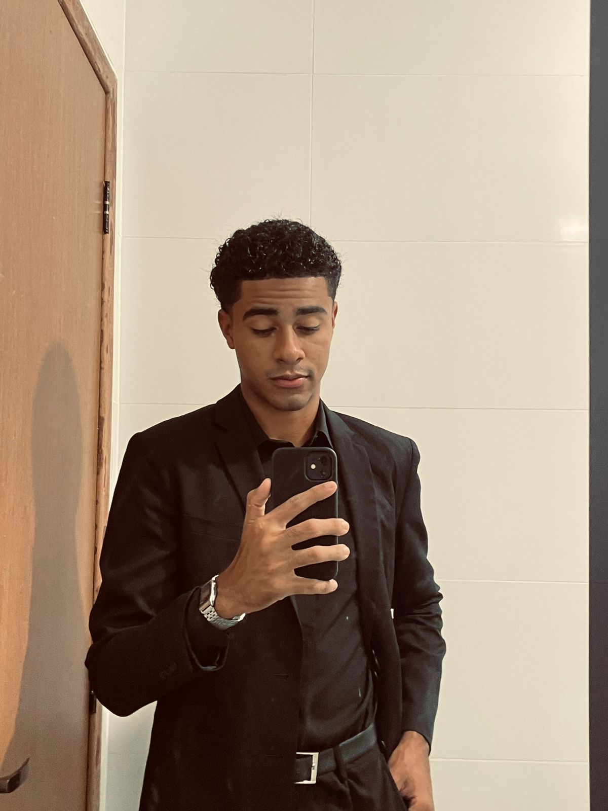

Home Page

Sobre mim
Meu nome é Gabriel Bernardo dos Santos e sou estudante de Sistemas de Informação.
Quero contribuir com o que sei e com o que venho aprendendo, às micro e grandes empresas, para apresentação e otimização de sua marca e, ou produto vendido,
desenvolvendo telas para alavancar as vendas.
Minha História
Minha história na tecnologia começou com o interesse pela área e vontade de aprender mais sobre esse universo.
Durante o ensino médio tive meus primeiros contatos com a área,
e hoje, no 1º período de Sistemas de Informação,
sigo aprendendo e me preparando para entrar no mercado de trabalho.
Habilidades Pessoais
- Conhecimento em tecnologia e sistemas
- Comunicativo
- Trabalho em equipe
- Organização e disciplina
- Facilidade de aprendizado
- Dedicado
- Aprendezagem continua
Hobbies
- violão
- futebol
- pedalar
- Video Games
- Tecnologias
Vida Academica
| Etapa de Ensino | Instituição | Descrição |
|---|---|---|
| Ensino Fundamental I | UMEF PROF EMÍLIA DO ESPÍRITO SANTO CARNEIRO | Desenvolvimento das bases educacionais e início da formação acadêmica |
| Ensino Fundamental II | UMEF JOFFRE FRAGA | Consolidação do aprendizado e desenvolvimento do pensamento crítico |
| Ensino Médio | EEEM BENÍCIO GONÇALVES | Participação em projetos, apresentações e desenvolvimento acadêmico |
| Ensino Superior | Universidade Vila Velha | Curso de Sistemas de Informação com foco em tecnologia |
Matérias da Faculdade
| Disciplina | Carga Horária | Descrição |
|---|---|---|
| Construção de Software para Web | 80h | Desenvolvimento de aplicações web utilizando boas práticas |
| Design e Desenvolvimento de Banco de Dados I | 80h | Modelagem e criação de bancos de dados |
| Experiência e Interface com o Usuário | 40h | Estudo da usabilidade e design de interfaces |
| Fundamentos de Tecnologia da Computação | 60h | Conceitos básicos de computação |
| Lógica para Computação | 80h | Raciocínio lógico aplicado à programação |
| Textos Científicos | 80h | Produção de textos acadêmicos |
Planos Futuros
Pretendo seguir carreira na área de tecnologia, atuando com desenvolvimento de sistemas e inovação, ou continuar aplicando a tecnologia em meus negócios.